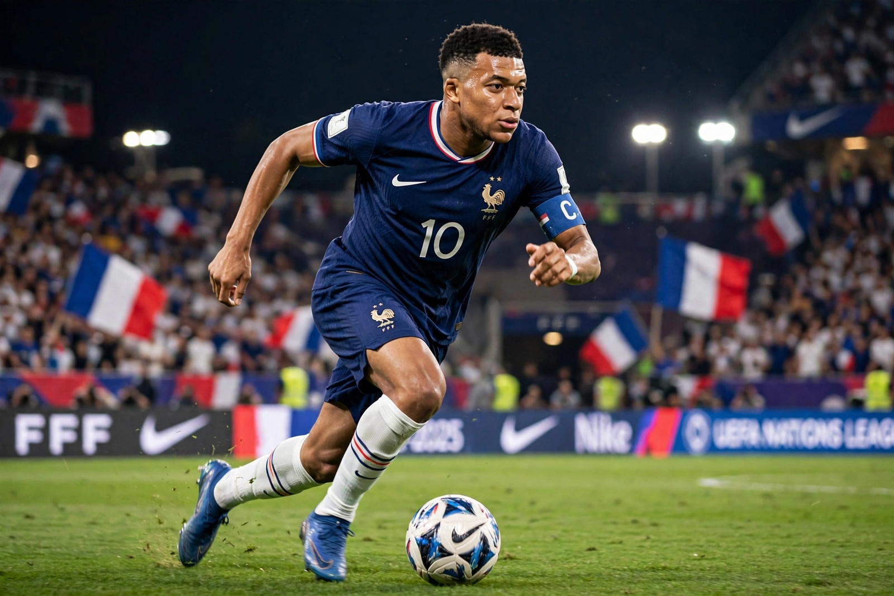

Kylian Mbappé
From Wikipedia, the free encyclopedia

Kylian Mbappé Lottin (born 20 December 1998) is a French professional footballer who plays as a forward for Real Madrid and captains the France national football team. Regarded as one of the best players in the world, he won the 2018 FIFA World Cup as a teenager, scored a hat-trick in the 2022 World Cup final, and after seven seasons and a club-record goal tally at Paris Saint-Germain, joined Real Madrid on a free transfer in 2024.
Career
Born in Paris and raised in Bondy (his father a coach of Cameroonian origin, his mother a former Algerian handball player), Mbappé was developed at INF Clairefontaine and Monaco, whose 2016–17 Champions-League run made him Europe's most coveted teenager. PSG's €180 million deal (2018) made him the second-most-expensive player ever; in Paris he won six Ligue 1 titles and became the club's all-time top scorer (256 goals), but not the Champions League, which PSG finally won the season after he left (2025).
France and Madrid
Mbappé's 2018 World Cup (four goals, best young player) made him the second teenager after Pelé to score in a World Cup final; his 2022 final hat-trick — only the second ever — could not prevent Argentina's shootout win. Captain from 2023, he is closing on France's scoring record. At Madrid, after a slow start he finished his first season as La Liga's top scorer (the Pichichi) and European Golden Shoe winner.